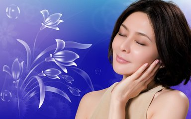
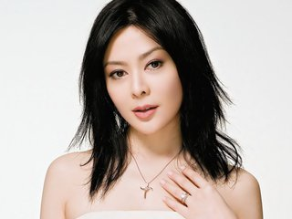
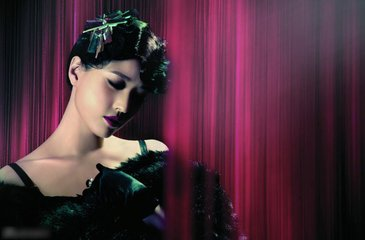
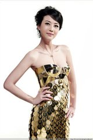
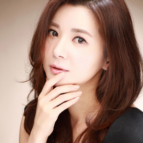
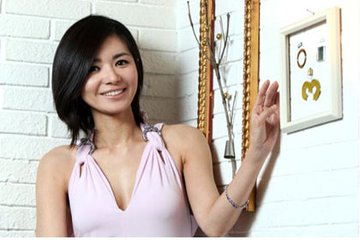

明星推荐
“国际巨星”关之琳 2007—2011年曾出任伊莎美尔形象代言人
关之琳：香港著名女艺人，满族镶蓝旗瓜尔佳氏。曾在女子学校就读，毕业于马利诺书院。关之琳素有“香港第一美女”之称。年幼时被许多叔叔阿姨称作“小美人”，有的戏称其为“搪瓷娃娃”。
1998年，被美国著名杂志《PEOPLE》评为“全球50位最美丽的名人”之一。同年，在一项香港美女票选活动中，被选为“香港经典美女”。
1999年，11月获选为“十度光彩名人”之一。
2001年10月获选“最具性格风采人士”等殊荣。担任着多个品牌的形象代言人。
代表作品
电影:
《大冒险家》（1995）《末路英雄》（1993）《花田喜事》 （1993）《做头》（2004）《绝世宝贝》（2002）
《卫斯理之蓝血人》（2002）《大腕》（2001）《冒险王》（1996） 《西楚霸王》（1994）《狮王争霸》（1993）
电视剧:
《甜甜廿四味》（1981） 《阿拉担梯》（1981） 《大将军》（1982） 《笑八仙》（1993）
音乐专辑:
《相约到永远》（1994）

是谁俘获了女王的心？
之前有媒体一直盛传，说我频繁出入高档整形中心，甚至传出“抑制抗衰老针剂竟然高达58万”的传闻。很长一段时间，都把自己关在家里，整个人的心情都受影晌。
其实，我同其她女人也一样，为了抵抗衰老．也不断尝试新方法，但是效果一般，2003 年，圈里的朋友推荐伊莎美尔，说它的主要成分，获得过诺贝尔大奖，起初我并没有报太大的希望，然而一疗程后，肌肤上的皱纹就像魔术般淡了很多。真实效果，看得见的年轻，让我时至今日依然坚持使用，伊莎美尔才是我的“理想情人”。至于后来出任其形象代言，说出的也是我真实的使用感受，我没有用过的产品，从来拒绝代言，年轻其实很简单，伊莎美尔做得到，你也做得到。
明星推荐
45+生物平皱素 分龄眼霜 肌致神仙水
“大众情人”周海媚 2005—2007年曾出任伊莎美尔形象代言
周海媚，1966年12月6日出生于中国香港，满洲镶白旗人瓜尔佳氏，1985年参选香港小姐落选，同年参加无线第一期艺员训练班出道。1988，台湾金龙奖香港杰出电视女演员奖。
1990，壹周刊“十大最受欢迎的电视女艺员”第二名，1994，台湾“梦中情人”第四名，2010，风尚盛典“年度最佳风尚影视女演员奖”，2015“电视世界TV WORLD 2015”英艺奖。
影视作品
1985《杨家将》 1986《流氓大亨》 1989《义不容情》 1994《倚天屠龙记》 1998《天地豪情》 2007年《射雕英雄传》2013年《神枪狙击》2014年《武媚娘传奇》

“百变”女郎的情有独钟
舞台上FANS称我为“百变女人”，从 《倚天屠龙记》中的冷艳杀手周芷若到 《真命天子》 中温柔多情的窦庆莲，从《杨家将》 中巾帼女将杨九妹到《流氓大亨》 中风情万种的方学宁，舞台上生活中女人角色不断在变，但唯一不变的是对伊莎美尔赋予我年轻的情有独钟。
在认识伊莎美尔之前，我也和你们一样，30 多岁肌肤面临危机—— 皱纹、松弛、暗沉、眼袋、黑眼圈纷纷来袭，衰老、病苦、无奈感觉自己即将过气，是伊莎美尔给了我重新在舞台上绽放的资本。从生物平皱的完美祛皱科技，到双效1+ 1，平抚皱纹＋提拉紧致的神奇功效，再到精纯生物平皱素的皮脂膜修复，重现婴儿般的柔滑美肌，一次次让我感受到肌肤蜕变的神奇，也是我始终如一钟情的选择
明星推荐
35+生物平皱素 双重超微隔离 分龄眼霜系列
“韩国天后”张瑞希 2012——至今出任伊莎美尔形象代言
张瑞希（1972 年1月 5 日一 ） ，韩国著书影视女演员。出生于韩国，毕业于庆熙人学， 10 岁以童星的身份出道，却一直在电视剧中出演配角，直到2002年才凭借《 人鱼小姐》 一举成名，并获得了2002年MBC 5项大奖，人气剧增。2009年，凭借电视剧 《妻子的诱感》 再创事业高峰。 2012 年，与中国著名演员林永健合作的电视剧 《林师傅在首尔》热播，引起很大的反晌。
代表作品
电影:
《幽灵鬼屋 》 2003 《我的队长金大出》 2006 《初生月和夜舟 》 2003 《 关东太阳会 》 1993 《 事物的秘密 》 2010
电视剧:
《林师傅在首尔》 2011 《 隋唐英雄 》 2012 《 庚子风云 》 2007 《 乞丐王子》2000 《 旋转木马》2003
《 白痴王子 》 2000 《 那女人的家 》 2001 《 妇产科》2009 《妻子的诱感》 2008 《爱情颂歌》2005
《人鱼小姐》2002）

其实 你也可以更年轻
做演员真的好辛苦，经常需要到各地拍摄外景，有风沙极大的沙漠，也去冰冷干燥的欧洲， 这些对我的肌肤造成极大的伤害，我也曾因此常常苦恼。 30 多岁的皮肤比 40 多岁女人的还差，竟然长出了小细纹，肤质干燥，渐渐皱纹变深，总难以祛除。就因为这个原因我与好几部电影的女主角擦肩而过，那段时间特别苦恼。
在拍摄电影 《林师傅在首尔》 中饰演青公少女朴善姬，但眼角的皱纹令化妆师特别苦恼，于是她给我推荐了伊莎美尔，只用了一个星期左右，我的干枯肤质变得特别水润，眼角细纹变淡了，就连下眼睑的那条深皱纹也奇迹般的变淡了。
也就是那一次，我自愿做了伊莎美尔的代言人，我愿意用我的真实感受，感染所有希望变得年轻的女性！
明星推荐
25+生物抗皱精华素 肌致抗皱能量乳 原生植物系列
“金像影后”叶童 2004——2006年曾出任伊莎美尔形象代言
叶童（ CediaYip ），原名李思思，出生于香港，是香港电影及电视剧演员。初出道即以 《 烈火青春》 内的大胆豪放充满美感的演出而获提名第二届香港电影金像奖最佳新人。叶童在影坛有“千面女郎”的美誉，这大概和她在戏里时而柔媚入骨，时而刁蛮任性的扮相有关。叶童自有一种独特的气质，而且可塑性强，大家闺秀、小家碧玉、良家妇女、风流浪女、古装、时装、悲剧、喜剧，都能够驾驭。凭 《飞越黄昏》 当选最佳女配角，分别凭《表错七日情》 、 《 婚姻勿语 》 两次获得香港电影金像奖最佳女主角。
为 47 岁的我刻意制造的皱纹
为了在最近的一部影片中饰演一位饱经沧桑的 50 岁母亲，令我的化妆师大费周章，本来一个 47 岁的女人演择一位50岁的母亲，无需过度修饰．怎奈化妆师在我的脸上找不到一条皱纹，最后只能使用假皮制造皱纹。
在我多年的演艺生涯中，大多饰演的都是青春女性形象，几乎很少出演 35 岁以上的中年或者老年女性，这都要感谢伊莎美尔，没有皱纹的面容让我始终保持青春的舞台形象，同时也让我失掉了一些非常好的中年女性角色。
不论是剧场的化妆人员还是我的私人化妆师，总是说为我化妆很轻松，没有皱纹无需过度修饰，肌肤紧实水润更易上妆，这一切都要感谢伊莎美尔多年来一直相伴。
明星推荐
新形肽养眼元素 肌致精纯生物平皱素 肌致神仙水